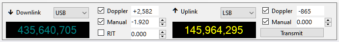
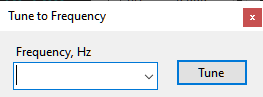

Frequency Control
Frequency Control is the panel on the toolbar that allows you to read and control the frequencies of the SDR receiver, external receiver and external transmitter:

Downlink
The left hand part of the panel represents the receiver settings that apply to both SDR and external radio.
Label
When the receiver is tuned to a downlink transmitter of some satellite, the label "Downlink" appears; when it is tuned to a terrestrial station, the label "Terrestrial" is displayed. To tune to a downlink, select some satellite in the Satellite Selector panel, or select a different transmitter from the drop-down list, or click on the satellite name in any panel. To tune to a terrestrial signal, click on it on the Waterfall Display or on the Frequency Scale, or click on the downlink frequency display and enter the frequency in the Tune to Frequency window:

Mode
Select the mode manually for every satellite transmitter that you are using. Your selection is remembered and restored when the transmitter is selected again.
The Mode selected in the drop-down box applies to the SDR receiver, if it is enabled, and to the external receiver, if RX CAT is enabled. To enable or disable the SDR or RX CAT, click on the corresponding label on the status bar.
Frequency Display
The frequency display shows either the nominal frequency of the downlink, or the frequency with all corrections applied. Right-click on the display to switch between the two frequencies.
The mouse tooltip of the frequency display shows both frequencies and some other details.
When RX CAT is enabled and working properly, the frequency is shown in a bright color, otherwise the display is dimmed. The color depends on the band: yellow/olive for VHF, cyan/teal for UHF, white/gray for all other bands.
Doppler
The Doppler box shows the current Doppler offset of the downlink signal. This value is not editable, but Doppler correction may be enabled or disabled using the checkbox. See the Doppler Tracking section for a detailed discussion of Doppler offset calculation and tracking.
Manual
The manual correction of the downlink frequency. The frequencies of the satellite downlink signals usually differ from the nominal values in the database, for different reasons, by a few hundred Hertz and up to a couple of kilohertz. This difference is pretty stable, so it is enough to enter the correction once to have the receiver accurately tuned. SkyRoof remembers the manual correction for each satellite.
The value of the manual correction may be entered in the Manual box by clicking on the up/down buttons, or by spinning the mouse wheel over the box, or by typing the value directly. However, it is more convenient to adjust the correction visually, using the mouse on the Frequency Scale.
The checkbox allows you to disable the manual correction if necessary.
RIT
The RIT function is useful when listening to a conversation of two stations that are not exactly on the same frequency, or when your CQ is answered off the frequency.
The RIT offset may be entered in the RIT box, but it is more convenient to control it on the Frequency Scale.
Use the checkbox, or the commands on the Frequency Scale, to toggle RIT.
Uplink
The Uplink part of the panel is similar to the Downlink part described above. It is enabled only if the selected satellite transmitter has an uplink. The bright color of the frequency display means that TX CAT is enabled and working properly. The Transmit button switches the external radio between the RX and TX modes.
The Manual Correction setting of the uplink allows you to align your transmit and receive frequencies. See the Frequency Scale section for details.
Dial Knob
The dial knob of the transceiver can be used to tune the frequency when CAT control is enabled and the Ignore Dial Knob option is set to false.
When both RX CAT and TX CAT are enabled, the dial knob controls the receiver frequency.
Note
When the radio is in the SAT mode, the NOR/REV switch should be in the NOR position for correct tuning with the dial knob.